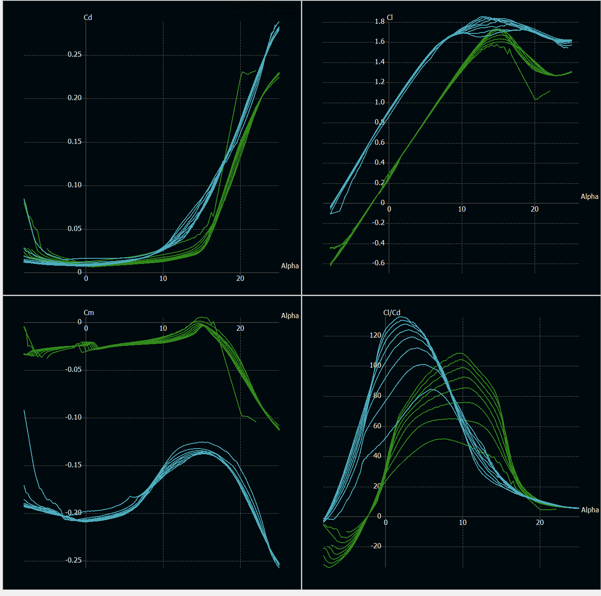
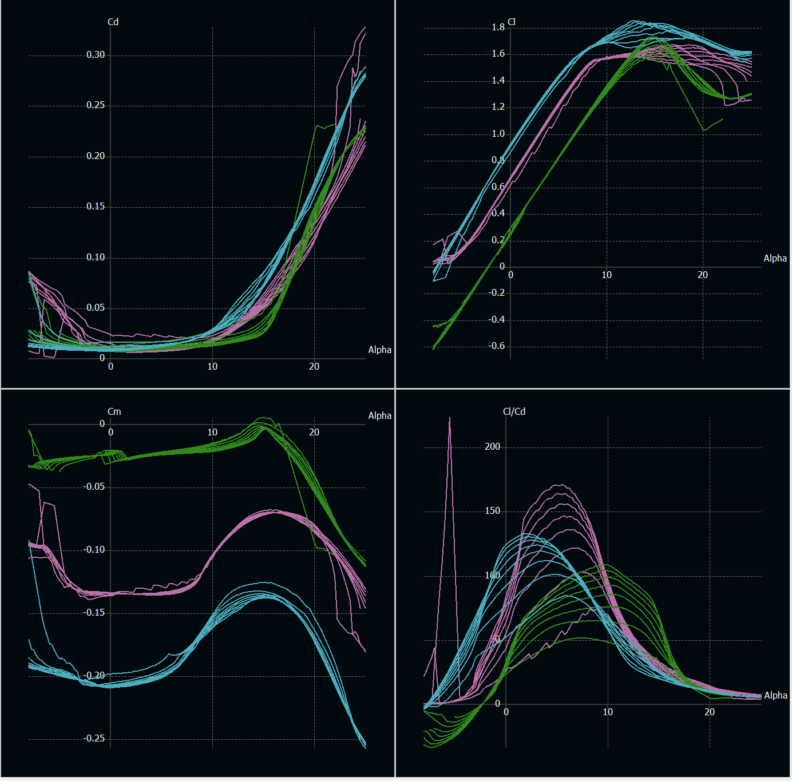
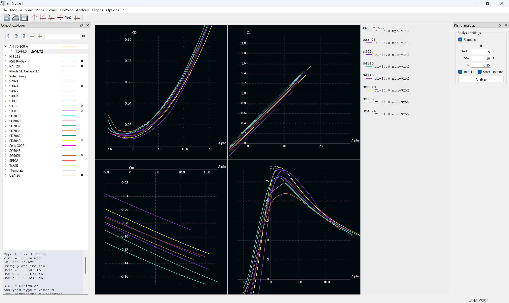
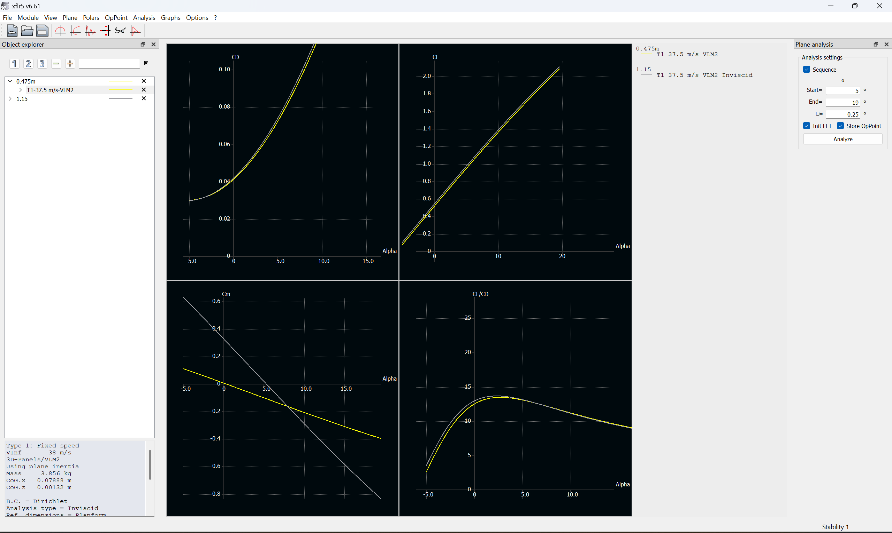
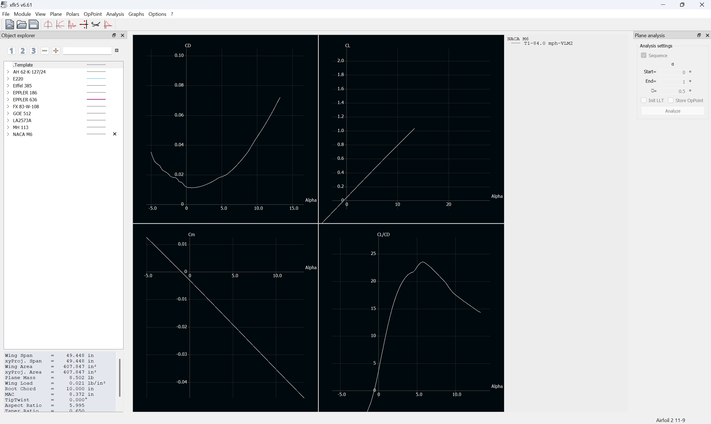

Overview
As part of Aztec Aerospace Design Build Fly, I contribute to aircraft aerodynamics and propulsion decisions supporting the development of an efficient competition aircraft.
Aerodynamic Evaluation
My work includes evaluating airfoils and aircraft performance using tools such as XFLR5 and comparing options to support design decisions.
Propulsion
I evaluate motor and propeller combinations using performance data and tools such as eCalc, while also supporting thrust testing and interpretation of propulsion results.
Design Decisions
The objective is not simply to generate analysis outputs, but to use the results to make practical aircraft design choices involving efficiency, propulsion capability, and overall vehicle performance.
Project Gallery






